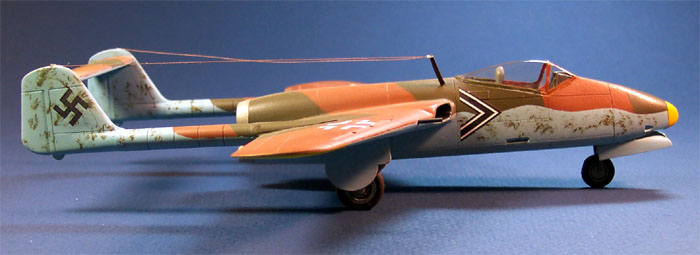
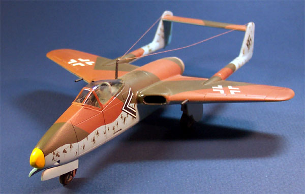
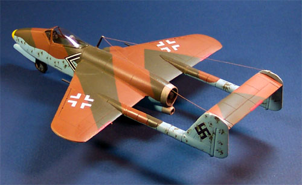

{kind=link}
{kind=link}


Planet Models 1/48 Focke Wulf PTL Flitzer Kit #025

Images, text and model Copyright � 2003 by Matt Swan
In March 1943 the Focke Wulf Company in Bremen initiated a series of design studies for jet fighters, which resulted in Design 6 in February 1944. The design was approved for mock-up and wind tunnel testing and redesignated as Project VII. It was given the code name �Flitzer� or �Madcap�.

The Focke Wulf Flitzer had mid-fuselage mounted wings with a moderate 32-degree sweepback, twin booms and a high set tail plane. The proposed power plant was to be the He S 011A turbojet with a Walter HWK 509 A-2 bi-fuel rocket (the same technology that powered the Komet) mounted below the turbojet. This arrangement was later revised, eliminating the rocket engine. Projected armament consisted of two MK 103 30mm cannon or two MK 108 30mm cannon in the lower nose and two MG 151/20 20mm cannon in the wings.
The "Flitzer" was well advanced in development by war's end with a full-size mock-up completed, wind tunnel testing had been performed and some prototype sub-assemblies having been completed. The project was eventually abandoned because, although using only a single turbojet, its performance was no better than the Me262, which was already entering service.
The basic design layout did not cease to exist there however. This configuration showed up a few years later in the British De Havilland Vampire. There is no conclusive evidence that the Vampire�s design is based on the Flitzer but the similarity is striking.
The model is a resin kit from Planet Models that the wife had gotten for me for Christmas many years ago (a good wife indeed) and this was the very first all resin kit that I had ever built. The kit consists of 33 resin pieces and a single vacuformed canopy. Although I had nothing to compare it to at the time I now realize how well done the resin pieces were. I did not know what a micro-hole was at the time and this kit didn�t teach me that because there were none. The single vacuformed canopy was a little scary. Not having a second one to fall back on meant there was no option to screw up and fortunately I did not.

The kit displays nice, sharp recessed panel lines, gun ports and shell ejector ports in the appropriate places. There are only decals included for one aircraft but the quality of the decals is very nice. They lay down nicely and only needed a little setting solution to snuggle down. The camouflage pattern was done with Model Master Military Flat Brown and Gunze-Sangyo RLM 83. The underside was a lightened Testors Flat Sky Blue. I know these are not the regulation RLM colors but when I did this I had very little access to the conventional paints like I do now.
The only real complaint that I have with the kit is the resin gear struts. The model is fairly heavy and as time passes the gear are slowly buckling. I�ve had to add steel pins along the gear struts to keep the thing from collapsing completely. It�s definitely an unusual aircraft and an excellent addition to the collection.